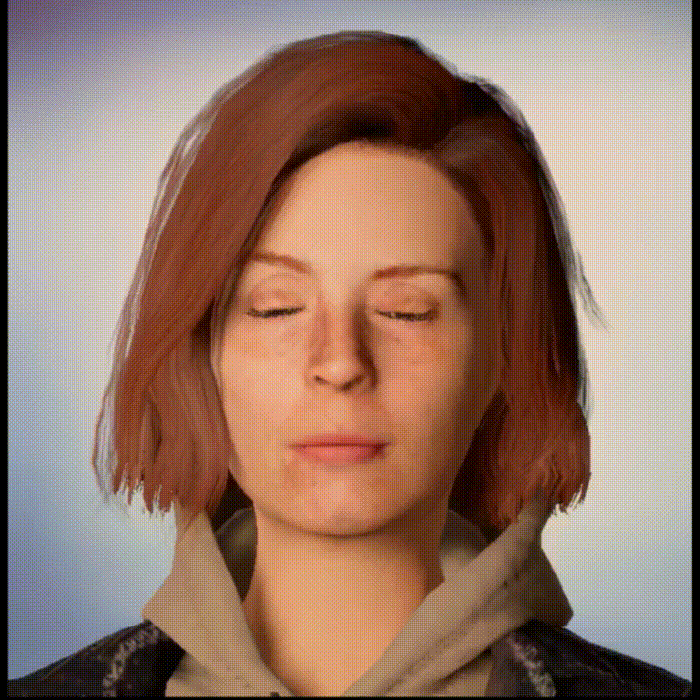

I / Presence
An image can be a body, a signature, or a point of entry.
Serena Stelitano works as Serste across digital art, collaborative systems, immersive journalism and spatial media. The practice moves from image-making toward environments that can be entered, read and acted within.


II / Image as system
The image does not finish at its edge.
Painting, illustration and visual conversation remain active materials: mutable, social and able to carry a story into another medium.


III / Rooms
Exhibition becomes a social interface.
Virtual rooms are used as shared sites: for encounter, collective display, performance, exchange and situated attention.


IV / Investigative worlds
Reporting finds a spatial grammar.
For CCIJ projects, Serena Stelitano leads development across immersive, XR and game-based formats. Research is carried through rooms, objects, routes and decisions.


V / Record
A practice in motion, held as evidence.
The public record contains the longer chronology, documentary sources and evidence distinctions. This web volume is an image-led route through the work.